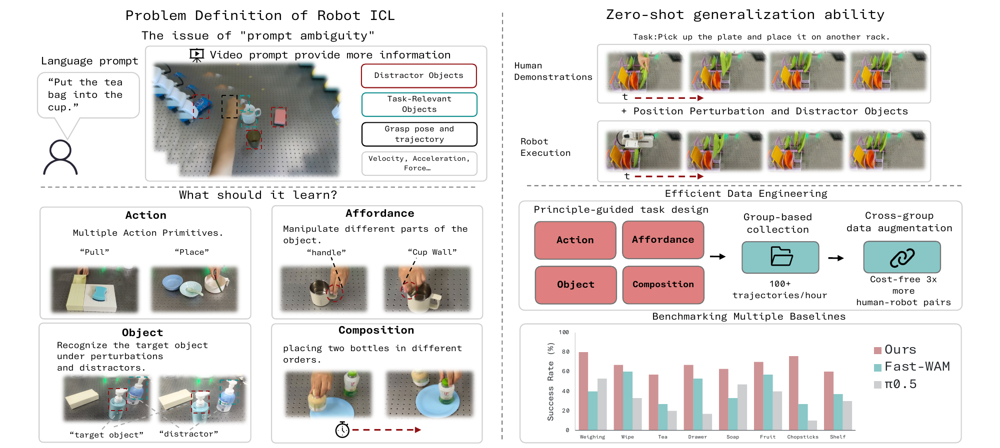
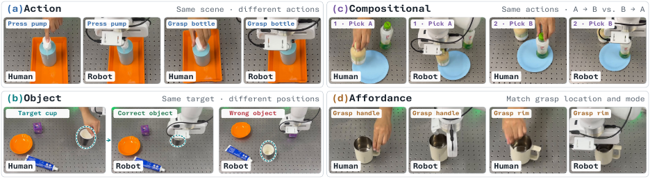
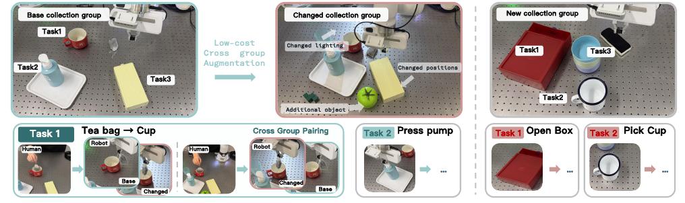
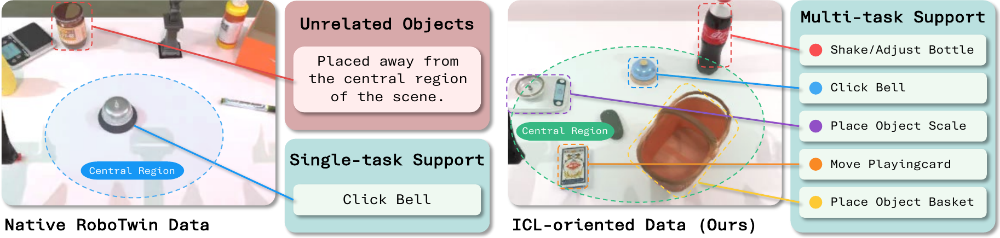
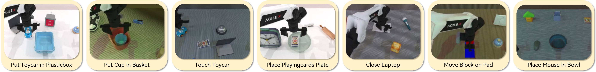
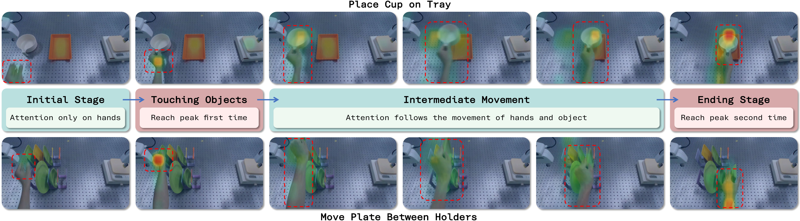

Execution of the eight real-world evaluation tasks.
Starting from the question of whether a robot can learn a new task by watching a single human demonstration video.

The paper studies robotic in-context learning (ICL), an emerging paradigm that enables robots to infer and execute tasks from visual demonstrations. Despite its growing promise, the problem itself remains under-defined: a visual demonstration simultaneously conveys action trajectories, object semantics, manipulation affordances, spatial relations, and task goals, making it unclear what information the robot is actually expected to follow.
This work first provides a clear problem definition of robot ICL that explicitly defines its learning target and resolves this fundamental prompt ambiguity. Building on that definition, the authors develop a minimalist and reproducible ICL framework, SimpleICL, with a visual prompt encoder and a low-cost data collection protocol. Without massive pre-training or specialized data infrastructure, the framework achieves strong performance in both simulation and real-world environments.
Because a video conveys an overabundance of information, it often fails to precisely convey the intent of the human demonstration.
The model must emulate human behavior at the categorical level of actions, such as grasping, placing, rotating, pressing, and translating.
The model should discern structural compositions and sequential orderings. Executing a rotation prior to picking up an object conveys a semantics fundamentally distinct from picking up the object before rotating it.
The model must comprehend that it is manipulating a specific object rather than blindly mimicking spatial motion trajectories. If the object's location differs from the demonstration, execution should align with the object's actual pose.
The model should learn how to manipulate an object — for example, whether to grasp the body of a mug or its handle.
Execution speed, arm morphology, hand appearance, specific grasp angles, and personal reaching habits are treated as irrelevant noise. Extreme positional disparities, however, are treated as distinct semantics.
ICL should be robust to lighting conditions, background colors, and non-target distractor objects.
Semantic-discriminative data construction paired with a cost-free augmentation strategy.


The practical pipeline employs a collection-group-based strategy, where a collection group is a distinct scene coupled with a set of executable tasks within that scene. After completing a collection group, the pipeline transitions to a new group via two types of scene switches: major transitions (a complete change to an entirely new scene) and minor transitions (perturbation-based variations within the existing scene, such as altering object placement, adjusting illumination, or swapping background distractor objects).
These minor transitions allow new human-robot data pairs to be constructed with perturbation-based augmentation across groups, enriching the dataset at virtually zero additional collection cost. With this structured design, a single robotic platform can produce up to 3,000 valid human-robot data pairs per working day.
Extracting task-relevant information from the raw human demonstration video while filtering out irrelevant distractors.
The raw conditioning video is first processed by a pretrained visual encoder (e.g., a ViT or a frozen visual backbone) to produce a sequence of frame-level embeddings, which are then flattened and projected into a shared latent space. Next, a small set of learnable context tokens is introduced. Through a cross-attention mechanism, these tokens iteratively query the video embedding sequence, attending to the most task-relevant spatiotemporal cues while suppressing background noise and irrelevant hand movements. The final output is a compact set of conditioned token embeddings, which are concatenated into the context of both the video and action DiTs and fed into the network via cross-attention, resulting in the final conditional policy.
The number of context tokens remains fixed regardless of video duration, enabling natural extension to long-horizon tasks.
The attention-based querying mechanism explicitly suppresses distractors (hand appearance, background clutter) and attends to actions, temporal order, and object identities.
The entire module is jointly differentiable with the downstream policy, avoiding brittle heuristic key-frame selection and ensuring coherent co-adaptation.
RoboTwin 2.0, with AgileX serving as both the demonstrator and the executor.
The native RoboTwin benchmark follows a task-centric data production paradigm. However, this paradigm cannot effectively evaluate the capability of ICL, as unrelated objects outside the action area do not constitute genuine task ambiguity. The proposed pipeline instead first constructs a scene in which multiple task-relevant objects are simultaneously present within the reachable areas, and then collects multiple tasks under diverse object placements. This yields 18,000 demonstrations for training, alongside 27,500 native RoboTwin demonstrations.

Using the ICL-oriented data pipeline, partial RoboTwin tasks are combined to form the visual ambiguity test. The table below reports the average success rate (%) on this test.
| Model | Trained on | Average |
|---|---|---|
| Fast-WAM | Native | 37.6 |
| SimpleICL (Ours) | Native | 40.3 |
| SimpleICL (Ours) | ICL-oriented | 72.1 |
| w/o. video cond. | ICL-oriented | 61.6 |
| w/o. future pred. | ICL-oriented | 20.2 |
Seven novel tasks are designed for simulation evaluation that are neither natively supported by RoboTwin nor present in the training set.

| Task | Fast-WAM | Ours | w/o. VC | w/o. FP |
|---|---|---|---|---|
| Cup_Basket | 18.2 | 72.7 | 45.5 | 18.2 |
| Touch_Toycar | 8.3 | 58.3 | 8.3 | 0.0 |
| Mouse_Bowl | 25.7 | 63.3 | 20.0 | 16.7 |
| Block_Pad | 3.3 | 50.0 | 13.3 | 3.3 |
| Close_Laptop | 33.3 | 63.3 | 13.3 | 23.3 |
| Toycar_Box | 40.0 | 90.0 | 36.7 | 16.7 |
| Cards_Plate | 43.3 | 63.3 | 46.7 | 36.7 |
| Average | 24.6 | 65.9 | 26.3 | 17.9 |
Success rates (%) on novel OOD simulation tasks. VC = video conditioning, FP = future prediction.
Eight unseen tasks across three difficulty levels.
Evaluation is conducted at three difficulty levels: Easy, where a single executable task is present; Medium, where multiple executable tasks require discrimination; and Hard, where multiple valid execution modes exist.
| Level | Method | Weighing | Wipe | Tea | Drawer | Soap | Fruit | Chopsticks | Shelf | Average |
|---|---|---|---|---|---|---|---|---|---|---|
| Easy | ||||||||||
| Fast-WAM | 0.90 | 0.87 | 0.83 | 0.80 | 0.63 | 0.90 | 0.73 | 0.77 | 0.80 | |
| π0.5 | 0.87 | 0.97 | 0.80 | 0.60 | 0.73 | 0.60 | 0.53 | 0.67 | 0.72 | |
| SimpleICL (ours) | 0.93 | 0.76 | 0.73 | 0.83 | 0.73 | 0.86 | 0.80 | 0.83 | 0.81 | |
| Medium | ||||||||||
| Fast-WAM | 0.83 | 0.50 | 0.63 | 0.43 | 0.60 | 0.83 | 0.63 | 0.73 | 0.65 | |
| π0.5 | 0.63 | 0.46 | 0.37 | 0.43 | 0.57 | 0.47 | 0.23 | 0.57 | 0.47 | |
| SimpleICL (ours) | 0.83 | 0.66 | 0.60 | 0.80 | 0.67 | 0.63 | 0.73 | 0.63 | 0.70 | |
| Hard | ||||||||||
| Fast-WAM | 0.40 | 0.60 | 0.27 | 0.53 | 0.33 | 0.57 | 0.27 | 0.37 | 0.42 | |
| π0.5 | 0.53 | 0.33 | 0.20 | 0.17 | 0.47 | 0.40 | 0.10 | 0.30 | 0.31 | |
| SimpleICL (ours) | 0.80 | 0.67 | 0.57 | 0.67 | 0.63 | 0.70 | 0.76 | 0.60 | 0.68 | |
Real-world evaluation on eight unseen tasks. Success rates (%) are reported for each method. Wipe = wiping a plate; Tea = serving tea; Drawer = pulling a drawer; Soap = pressing a soap dispenser; Fruit = placing fruit; Chopsticks = organizing chopsticks and bowls; Shelf = organizing items on a shelf.
